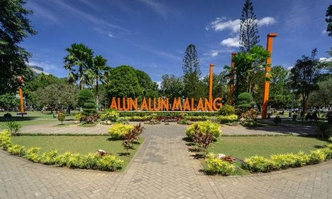
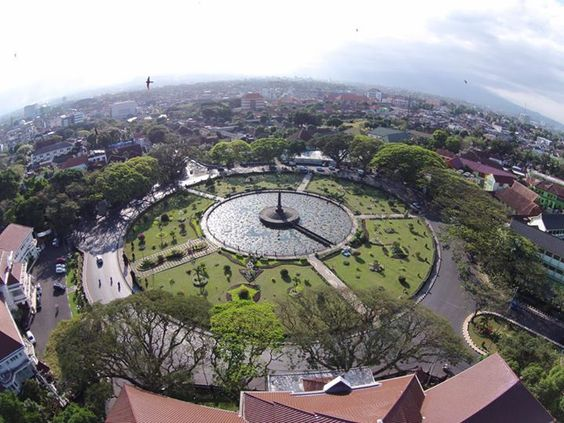
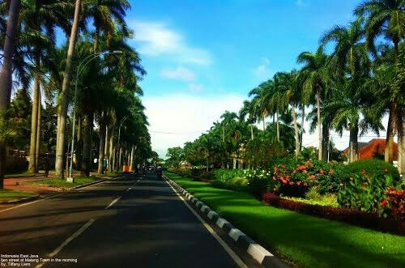

Sejarah Kota Malang
Asal Usul Nama Malang
Nama "Malang" diperkirakan berasal dari kata "Malangkuçeçwara" yang terdapat pada sebuah prasasti peninggalan kerajaan Kanjuruhan yang ditemukan di sekitar kota ini. Kata "Malangkuçeçwara" memiliki arti "Tuhan telah menghancurkan yang salah dan menegakkan yang benar." Namun, ada juga versi lain yang menyebutkan bahwa nama Malang berasal dari nama sebuah desa kuno yang bernama "Malang," yang menjadi pusat pemerintahan pada masa itu.
Masa Kerajaan
Pada abad ke-8, Malang menjadi pusat pemerintahan Kerajaan Kanjuruhan, salah satu kerajaan Hindu tertua di Jawa Timur, yang dipimpin oleh Raja Gajayana dan dikenal melalui prasasti Dinoyo. Kemudian, pada abad ke-13, Malang berada di bawah pengaruh Kerajaan Singhasari yang didirikan oleh Ken Arok. Raja terakhirnya, Kertanegara, memperluas wilayah hingga ke luar Jawa, namun setelah Singhasari jatuh oleh serangan Kediri, Malang menjadi bagian dari Kerajaan Majapahit.
Masa Penjajahan Belanda
Pada masa penjajahan Belanda, Malang mulai berkembang menjadi kota penting. Belanda mendirikan kota ini sebagai pusat administrasi dan perdagangan pada abad ke-18. Malang terkenal dengan udaranya yang sejuk dan menjadi tempat peristirahatan bagi para pejabat kolonial Belanda. Pada masa ini, banyak bangunan bergaya kolonial yang dibangun, beberapa di antaranya masih berdiri hingga saat ini, seperti Tugu Malang dan bangunan-bangunan di sekitar Jalan Ijen.
Masa Kemerdekaan
Setelah proklamasi kemerdekaan Indonesia pada tahun 1945, Malang menjadi salah satu kota yang aktif dalam perjuangan mempertahankan kemerdekaan. Kota ini menjadi saksi berbagai pertempuran antara pejuang Indonesia dan tentara Belanda yang mencoba untuk kembali menguasai Indonesia. Peristiwa penting yang terjadi di Malang antara lain Pertempuran Malang yang berlangsung pada November 1947. Malang juga memiliki peran penting dalam sejarah pendidikan di Indonesia, dengan berdirinya Universitas Brawijaya pada tahun 1963.
Geografis Kota Malang
Kota Malang, yang terletak pada ketinggian antara 440 hingga 667 meter di atas permukaan laut, merupakan salah satu tujuan wisata populer di Jawa Timur berkat potensi alam dan iklimnya yang sejuk. Secara geografis, kota ini berada di tengah-tengah Kabupaten Malang dengan koordinat 112,06° – 112,07° Bujur Timur dan 7,06° – 8,02° Lintang Selatan, dikelilingi oleh Kecamatan Singosari dan Karangploso di utara, Kecamatan Pakis dan Tumpang di timur, Kecamatan Tajinan dan Pakisaji di selatan, serta Kecamatan Wagir dan Dau di barat. Selain itu, Kota Malang dikelilingi oleh gunung-gunung seperti Gunung Arjuno di utara, Gunung Semeru di timur, Gunung Kawi dan Panderman di barat, serta Gunung Kelud di selatan. Iklim di Kota Malang selama tahun 2008 menunjukkan suhu rata-rata antara 22,7°C hingga 25,1°C, dengan kelembaban udara berkisar antara 79% hingga 86%. Kota ini mengalami dua musim, yaitu musim hujan dan kemarau, dengan curah hujan tinggi terjadi pada bulan Februari, November, dan Desember, serta kecepatan angin maksimum di bulan Mei, September, dan Juli. Secara geologi, tanah di Kota Malang bervariasi, dengan bagian selatan yang cocok untuk industri, bagian utara yang subur untuk pertanian, bagian timur yang kurang subur, dan bagian barat yang luas menjadi kawasan pendidikan. Kota Malang memiliki empat jenis tanah, yaitu Alluvial kelabu kehitaman, Mediteran coklat, Asosiasi latosol coklat kemerahan grey coklat, dan Asosiasi andosol coklat dan grey humus, di mana tanah andosol yang peka terhadap erosi membutuhkan perhatian khusus, terutama di Kecamatan Lowokwaru dengan kemiringan sekitar 15%.
Tempat Wisata di Kota Malang
1. Alun-Alun Kota Malang
Alun-Alun Kota Malang didirikan oleh Bupati Malang pertama, Notodingirat I, pada tahun 1818, sebagai pusat pemerintahan dan keagamaan kota Malang. Alun-alun ini berbentuk kotak dan dikelilingi oleh bangunan-bangunan penting, seperti masjid, pendopo, pasar, dan kantor pemerintah.

2. Tugu Malang
Tugu Kota Malang, sering disebut sebagai Tugu Malang atau Tugu Bunder, adalah salah satu landmark ikonik di Kota Malang, Jawa Timur. Tugu ini terletak di tengah-tengah kota, tepat di depan Balai Kota Malang, dan dikelilingi oleh taman yang indah.

3. Jalan Ijen
Jalan Idjen Boulevard atau Jalan Ijen merupakan salah satu jalan protokol di Kota Malang, Jawa Timur. Jalan ini menjadi saksi sibuknya arus lalu lintas dan aktivitas warga Kota Malang. Jalan yang begitu ikonik dan indah ini dipenuhi pohon palem yang berjejer rapi dan rindang. Hingga kini, Kawasan Ijen masih menjadi salah satu destinasi wisata favorit di Kota Malang bagi para pelancong. Ada nilai historis yang sangat besar perjuangan meraih kemerdekaan Indonesia. Karena kawasan Ijen menjadi salah satu daerah yang dikuasai Belanda..
